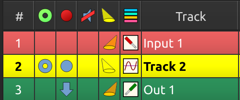

Track soloing
Soloing allows you to single out a track for listening while muting others, without you having to mute the other tracks. (See soloing track attribute).
Phantom soloing
In order to solo a track and mute others so that it is heard, MusE employs ‘phantom’ soloing: When a track is soloed, MusE automatically solos all tracks routed to and from this track. (See routes). A phantom soloed track is indicated in the track pane solo column. (See track attributes).

Soloing chains
When an audio output track sends audio to some external entity, such as an external running application, and audio from the external entity is fed back into a MusE audio input track, solo chains allow you to solo the input or output, and MusE will complete the path automatically soloing the other, and all paths that came before or after it.
Solo chains also work with MIDI tracks chained to audio inputs: When a MIDI track drives some MIDI device whose audio is fed into MusE, solo chains allow the entire chain to be soloed.
Solo chains are accessed via routing menus. (See solo chain routes).